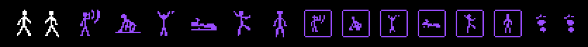
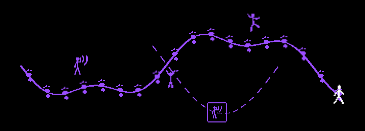
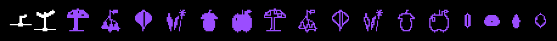
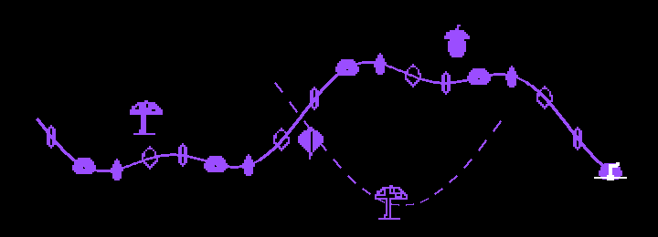
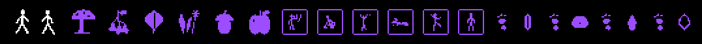
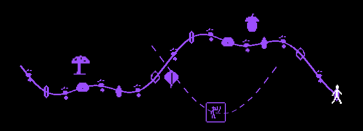

The app draws a trace of each walk: a trail of breadcrumbs, like the ones Hansel and Gretel dropped to find their way back. The marks along it now tell our story: the body that walks, and the food that grows along the way. They were drawn here first, as a proposal, to be redrawn by hand whenever we like.
| slot | what it is |
|---|---|
me | You, on the map while you walk. White, and it moves. |
sound | A recorded sound. Tap it to listen; it turns white while it plays. Each sound keeps its own variant. |
other | A sound someone else shared, near you. |
crumb | The breadcrumbs, dropped along every trace, taking turns through the variants. |
You walk (two steps of a stride). Where a sound was recorded, a gesture: listening with a hand at the ear, crouching to the ground, reaching up, lying in the grass, dancing, standing still. Other walkers: the same bodies, framed. The breadcrumbs are footprints, left and right.


You are a sprout, growing. Where a sound was recorded, what was foraged there: a mushroom, berries, a leaf, wild garlic, an acorn, an apple. Others: the same, hollow. The breadcrumbs are seeds: grain, bean, sunflower, pumpkin.


The walker of Marino; Seraina's harvest where the sounds are; other walkers as Marino's framed bodies; and the trail itself alternates footprints and seeds: a step, a seed, a step, a seed.


These links switch the marks for you only. They show once there are shared walks on the map.
me change while recording (crouch) and while still (stand)?It becomes a 1-bit glyph in a minute: purple on black, like the parade drawing. Then it is live on the map, first behind a ?glyphs= link to try, then for everyone once we agree.
python3 tools/glyph_from_sketch.py photo.jpg marino sound --px 24
python3 tools/glyph_from_sketch.py photo.jpg seraina crumb --px 16
./deploy_afpp_web.sh # then: altred.xyz/AlpineFeministPunkParade/?glyphs=marino
# to make a set the default: "active": "marino" in public/glyphs/glyphs.json, deploy again
./build_deriva.sh # the app carries the same setsDE. Die App zeichnet die Spur jedes Spaziergangs, wie die Brotkrumen von Hänsel und Gretel. Vier Zeichen füllen die Karte: du (me), ein Klang (sound), der Klang von anderen (other), die Krumen entlang der Spur (crumb). Zeichne sie mit schwarzem Stift auf weißes Papier, ein Motiv pro Blatt, fotografiere von oben und schick das Foto mit dem Namen des Platzes. Es wird ein 1-Bit-Zeichen in Lila.
FR. L’appli dessine la trace de chaque marche, comme les miettes de Hansel et Gretel. Quatre signes remplissent la carte : toi (me), un son (sound), le son des autres (other), les miettes le long de la trace (crumb). Dessine-les au feutre noir sur papier blanc, un motif par feuille, photographie d’en haut et envoie la photo avec le nom de la case. Ça devient un signe 1 bit en violet.